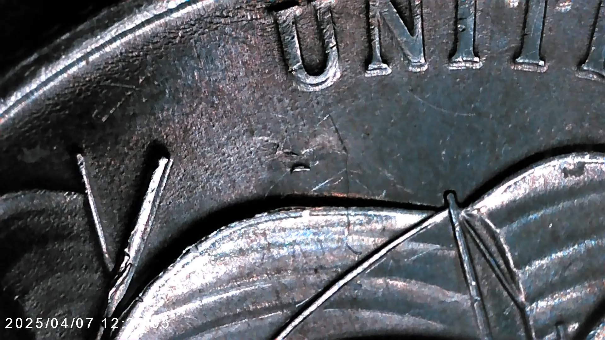
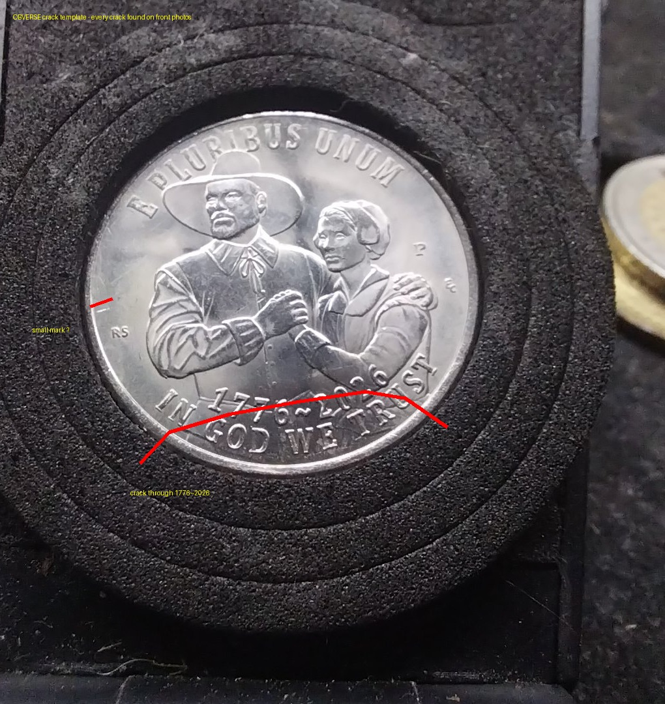
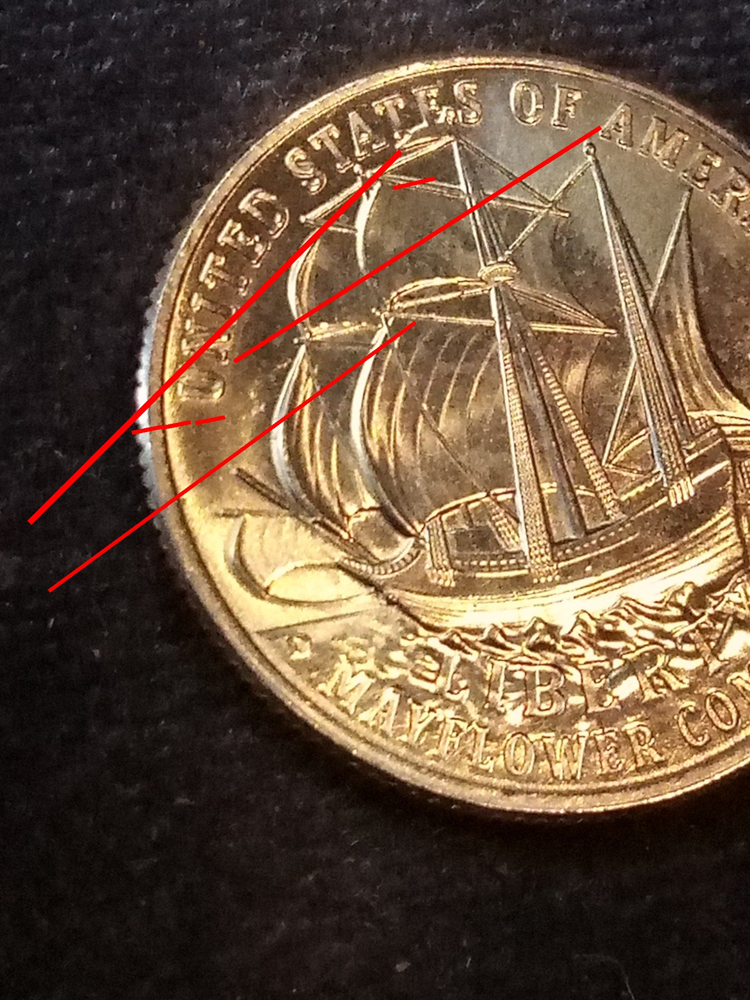

Small raised die-chip candidate (“Mosquito Bite”)
On the lady’s left arm, look for the small raised, rounded feature. The technical label stays provisional until expert attribution.
Twisted Penny — Forensic Series
Discovered in Larose, Louisiana
Something is hiding on the reverse of the 2026 Mayflower quarter.

Death of a Die · Field Record
01 / The Story
The discovery began in Larose, Louisiana, during close examination of 2026 Mayflower quarters.
A bird-like figure forms at the front of the ship’s mast as a die chip grows into cracks. David James Jr. named the figure the Phantom of Larose.
Death of a Die documents the die’s deterioration by named die-life phases—following the visible changes from the Very Early Die Stage through the final Phantom form.
The project records an observed visual progression. Proposed causes remain part of ongoing research and are not presented here as a professional attribution.
One die. From very early to final. A figure waiting at the end.
02 / The Discovery
Examined during a multi-hundred-coin audit, the study coin is documented face by face and detail by detail.
The full-face views establish orientation. The close-ups below are the working references for matching individual features.
03 / The Five Markers
Each feature is identified first with numismatic language, followed by the familiar Phantom nickname in parentheses. Compare both faces and look for the complete five-part pattern.
These are working identifications from the photographs, not a grading-service attribution. Reference language follows the Glossary of Common U.S. Coin Errors and Error-Ref’s die-deterioration guide.
On the lady’s left arm, look for the small raised, rounded feature. The technical label stays provisional until expert attribution.
At the pinky and hand, check for a narrow raised line or displaced-metal feature rather than using the nickname alone.
Inspect the elbow for a raised, irregular feature distinct from the surrounding design.
Compare the letters and facial detail for soft edges, radial flow, or spreading consistent with die wear—not true doubled-die attribution without confirmation.
On the reverse, inspect the anchor area for the final required raised feature.
If your coin has all five — you have the Phantom. A coin missing even one marker does not meet the Phantom of Larose rule.
04 / Compare the Markers
Match position, shape, and surrounding design—not just a general resemblance. Tap either composite crack map below to open it full-size.
One obverse and one reverse gather every crack-like line observed across the study photographs. They are composite research maps for comparison—not proof that every line occurred on one specimen or one working die.


Red lines show the mapped locations. Exact paths are approximate and should be checked against the original microscope photographs.
Comparison methodBegin with a full-face photograph for orientation. Then compare one close-up at a time under similar light and angle.
05 / Progression
The technical description comes first; the story name follows in parentheses. The full Phantom comes only at the end of the complete marker trail.
A small raised mast-area feature creates the first bird-like form.
The raised feature enlarges and nearby linear features become more visible.
The final form is identified under the project rule only after all five required markers are present.
06 / Certificates
A Certificate of Provenance ties the documented specimen to its evidence trail.
07 / About
David James Jr. is the researcher behind the Phantom of Larose and the Twisted Penny / Forensic Series.
The project documents the 2026 Mayflower quarter through full-coin photographs, close-up marker studies, and stage-by-stage comparisons.
Check your quarters.
The hunt is on.
Researcher
David James Jr.
Origin
Larose, Louisiana
Series
Twisted Penny — Forensic Series
08 / Submit Your Coin
Post your coin in the 2026 MAYFLOWER PUBLIC AUDIT Facebook group. David personally reviews every submission to see if it is in fact a Phantom of Larose coin.
Submissions open in Facebook. Group membership or sign-in may be required there.